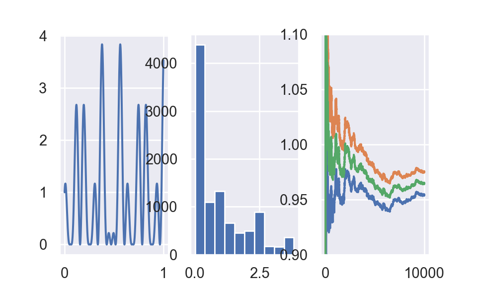

I write this webpage to record my study about classical Monte Carlo Integration. In my understanding, classical Monte Carlo Integration is a byproduct of law of large numbers:
Let \(X_1,...,X_n\) be i.i.d random variables with \(E\left(X_{1}\right)=E\left(X_{2}\right)=\ldots=\mu\) and \(\text{var}(X_1)=\text{var}(X_2)=...=\text{var}(X_n)=\sigma^2<\infty\).
Define \(\bar{X}_{n}=\frac{1}{n}\left(X_{1}+\cdots+X_{n}\right)\),
\[\begin{equation} \bar{X}_{n} \stackrel{P}{\rightarrow} \mu \quad \text { when } n \rightarrow \infty \tag{1.1} \end{equation}\]
Define sample variance as \(S^2_n=\frac{1}{n}\sum_{i=1}^n(X_i-\bar{X}_n)^2\).
\[\begin{equation} \text { If } \operatorname{Var} (S_{n}^{2}) \rightarrow 0 \text { as } n \rightarrow 0, \text { then } S_{n}^{2} \stackrel{P}{\rightarrow} \sigma^{2} \text { as } n \rightarrow 0, \text { where } \operatorname{Var}(X)=\sigma^{2} \tag{1.2} \end{equation}\]
If we are interested at integral \(\int_{\mathcal{X}} g(x) d x\), then we can do a transformation such that \(h(x) f(x) = g(x)\) and \(\int_{\mathcal{X}} g(x) d x = \int_{\mathcal{X}} h(x) f(x) d x\), where \(f(x)\) is a probability density function.
Classical Monte Carlo Integration
1. We are interested at \(\int_{\mathcal{X}} g(x) d x\)
2. Do transformation such that \(\int_{\mathcal{X}} g(x) d x=\int_{\mathcal{X}} h(x) f(x) d x\) where \(f(x)\) is a probability density function
3. \(\mathbb{E}_{f}[h(X)]=\int_{\mathcal{X}} h(x) f(x) d x\), hence by law of large number, \(\int_{\mathcal{X}} g(x) d x = \mathbb{E}_{f}[h(X)]\approx \frac{\sum_i h(X_i)}{n}\), where \(X \stackrel{i.i.d}{\sim} f(X)\)
Approximation of \(\int_{\mathcal{X}} h(x) f(x) d x\) can be expressed as
\[\begin{equation} \bar{h}_{n}=\frac{1}{n} \sum_{j=1}^{n} h\left(x_{j}\right) \tag{2.1} \end{equation}\]
Variance of \(\bar{h}_{n}\) can be calculated as
\[\begin{equation} \text{var}(\bar{h}_{n}) = \frac{\sum_{j=1}^{n} \text{var}(h\left(x_{j}\right))}{n^2} = \frac{n \text{var}(h\left(x\right))}{n^2} = \frac{\text{var}(h\left(x\right))}{n} \tag{2.2} \end{equation}\]
Be definition of variance,
\[\begin{equation} \operatorname{var}(h(x)) = \int_{\mathcal{X}}\left(h(x)-\mathbb{E}_{f}[h(X)]\right)^{2} f(x) d x \tag{2.3} \end{equation}\]
By WLLN for sample variance, approximation of \(\operatorname{var}(h(x))\) can be achieved by
\[\begin{equation} \operatorname{var}(h(x)) \approx \frac{\sum_{j=1}^n (h(x_j) - \bar{h}_{n})^2}{n} \tag{2.4} \end{equation}\]
\[\begin{equation} \operatorname{var}\left(\bar{h}_{n}\right) \approx \frac{\sum_{j=1}^{n}\left(h\left(x_{j}\right)-\bar{h}_{n}\right)^{2}}{n^2} \tag{2.5} \end{equation}\]
This is example 3.4 from page 84 Robert and Casella (2005). I reproduce similar results from book by python.
We are interested at \(\int_0^1 [\cos(50x) + \sin(20x)]^2dx\).
Set \(g(x) = [\cos(50x) + \sin(20x)]^2\) and \(\mathcal{X} = [0,1]\).
Set \(h(x) = [\cos(50x) + \sin(20x)]^2\) and \(f(x) = I(0\le x \le 1)\) is pdf of uniform(0,1) distribution.
Example1 algorithm
1. Simulate \(X \stackrel{i . i . d}{\sim}\) uniform(0.1)
2. \(\int_{0}^{1}[\cos (50 x)+\sin (20 x)]^{2} d x \approx \frac{\sum_i h(x_i)}{n}\)
3. Confidence interval is calculated as mean \(\pm\) one standard error
Standard error can be estimated by equation (2.5).
##example1
import numpy as np
import pandas as pd
import matplotlib.pyplot as plt
np.random.seed(521)
def h(x):
output = np.cos(50 * x) + np.sin(20 * x)
output = output**2
return output
x = np.arange(0,1 + 0.001,0.001)
y = h(x)
n = 10000
u = np.random.uniform(size = n)
x3 = np.arange(1,10000+1,1)
df1 = pd.DataFrame({'x':x3,'y':h(u)})
df1["cumsum"] = np.cumsum(df1.y)
df1["mean"] = df1["cumsum"]/df1["x"]
df1["diff_2"] = (df1["y"] - df1["mean"])**2
df1["cumsom_diff_2"] = np.cumsum(df1["diff_2"])
df1["var"] = df1["cumsom_diff_2"]/((df1["x"])**2)
df1["lower"] = df1["mean"] - np.sqrt(df1["var"])
df1["upper"] = df1["mean"] + np.sqrt(df1["var"])
fig,(ax1,ax2,ax3) = plt.subplots(1,3)
ax1.plot(x,y)
ax1.set_xlabel("Function")
temp = ax2.hist(h(u)) ##hide output
ax2.set_xlabel("Generated Values of Function")
ax3.plot(df1["x"],df1["lower"])
ax3.plot(df1["x"],df1["upper"])
ax3.plot(df1["x"],df1["mean"])
ax3.set_xlabel("Mean and Standard Error")
ax3.set_ybound(0.9,1.10)
plt.show()
plt.close()Left is plot for \([\cos (50 x)+\sin (20 x)]^{2}\). Middle plot is histogram of \(10,000\) values of \(h\left(x_{i}\right)\), simulated from uniform(0.1). Right plot is mean and confidence interval.
I reproduce similar results from Rxample 3.5. Robert and Casella (2005).
We are interested at, for given t, the approximation of
\[\begin{equation} \Phi(t)=\int_{-\infty}^{t} \frac{1}{\sqrt{2 \pi}} e^{-y^{2} / 2} d y \tag{2.6} \end{equation}\]
Use indication function as \(h(y)\), we have
\[\begin{equation} \Phi(t)=\int_{-\infty}^{t} \frac{1}{\sqrt{2 \pi}} e^{-y^{2} / 2} d y = \int_{-\infty}^{+\infty} \mathbb{I}(-\infty < y < t)\frac{1}{\sqrt{2 \pi}} e^{-y^{2} / 2} d y \tag{2.7} \end{equation}\]
We can denote \(h(y) = \mathbb{I}(-\infty<y<t)\) and \(f(y) = \frac{1}{\sqrt{2 \pi}} e^{-y^{2} / 2}\)
Example2 algorithm
1. Simulate \(Y \stackrel{i . i . d}{\sim} \mathcal{N}(0,1)\)
2. For given \(t\), \(\Phi(t)=\int_{-\infty}^{t} \frac{1}{\sqrt{2 \pi}} e^{-y^{2} / 2} d y \approx \frac{\sum_{i} h\left(y_{i}\right)}{n} = \frac{\sum_{i=1}^n \mathbb{I}_{x_{i} \leq t}}{n}\)
output = np.zeros(6*7)
z = 0
for t in [0,0.67,0.84,1.28,1.65,2.32]:
for n in np.arange(2,9,1):
x = np.random.normal(size = 10**n)
output[z] = np.round(np.mean(x < t),4)
z = z + 1
df_output = pd.DataFrame(output.reshape(6,7).T)
df_output.columns = map(lambda x: "t = {}".format(x),[0,0.67,0.84,1.28,1.65,2.32])
df_output.index = map(lambda x: "10^{}".format(x),np.arange(2,9,1))kable(py$df_output)| t = 0 | t = 0.67 | t = 0.84 | t = 1.28 | t = 1.65 | t = 2.32 | |
|---|---|---|---|---|---|---|
| 10^2 | 0.5000 | 0.8100 | 0.7600 | 0.9100 | 0.9400 | 1.0000 |
| 10^3 | 0.4800 | 0.7540 | 0.7890 | 0.8930 | 0.9370 | 0.9890 |
| 10^4 | 0.4965 | 0.7465 | 0.8104 | 0.8988 | 0.9553 | 0.9904 |
| 10^5 | 0.5029 | 0.7491 | 0.8008 | 0.8989 | 0.9499 | 0.9894 |
| 10^6 | 0.5002 | 0.7494 | 0.7997 | 0.8998 | 0.9504 | 0.9899 |
| 10^7 | 0.4999 | 0.7487 | 0.7994 | 0.8997 | 0.9505 | 0.9899 |
| 10^8 | 0.5000 | 0.7486 | 0.7995 | 0.8997 | 0.9505 | 0.9899 |
It is known that \(\Phi(t = 0) = 0.5\), \(\Phi(t = 0.67) = 0.75\), \(\Phi(t = 0.84) = 0.8\), \(\Phi(t = 1.28) = 0.9\), \(\Phi(t = 1.65) = 0.95\) and \(\Phi(t = 2.32) = 0.99\).
Casella, George, and Roger Berger. 2001. Statistical Inference. Textbook Binding; Duxbury Resource Center.
Robert, Christian P., and George Casella. 2005. Monte Carlo Statistical Methods (Springer Texts in Statistics). Berlin, Heidelberg: Springer-Verlag.